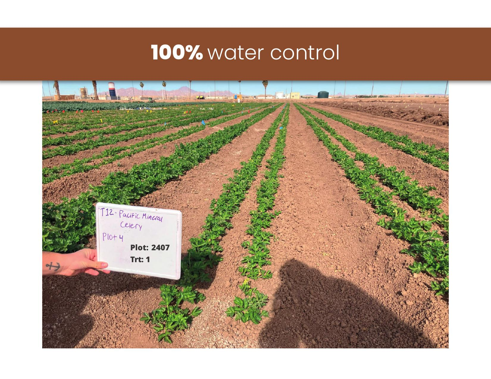
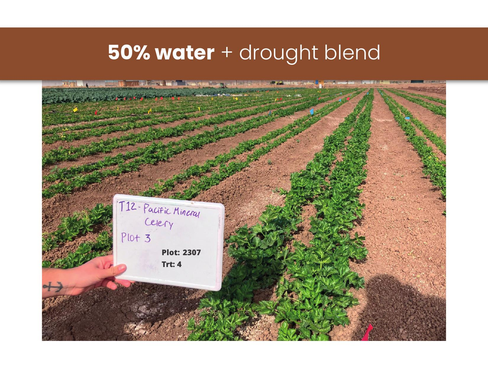

Compost as a Solution
for the Water Shortage
SkyFire Environmental Film Festival 2026
Rodo Alvarez
Secretary, Arizona Composting Council
Soil Seed & Water
Who We Are
Arizona Composting Council
- State chapter of the US Composting Council
- Founded 2024, won Rookie of the Year
- Policy advocacy, education, industry growth
- 108+ members and growing
Soil Seed & Water
- Organic soil amendments, compost, worm castings
- 60,000+ tons of dairy compost production
- One of AZ's largest worm castings facilities
- OMRI Certified, USCC Lab Tested
Arizona's Water Crisis
The problem we can't ignore
The Crisis by the Numbers
72%
of Arizona's water goes to agriculture
512K
acre-feet of CAP water cut (Tier 1 shortage)
27.8M
acre-feet of groundwater lost since 2002
80%
of rural AZ has NO groundwater regulation
Sources: Bureau of Reclamation, NASA Earth Observatory, CAP Arizona
Lake Mead: Our Lifeline
1,064 ft
Current elevation — 175 feet below full pool
- Arizona's CAP allocation cut by 30%
- Pinal County farms have effectively zero CAP water
- Post-2026 operating guidelines: two federal deadlines already missed
- Projected economic impact of full cuts: $3 trillion cumulative by 2060
Who's Taking Our Water?
Fondomonte LLC (Saudi-Owned)
- 10,000 acre alfalfa farm, La Paz County
- Growing alfalfa to export to Saudi Arabia
- Uses 75,000 acre-feet/year of AZ groundwater
- That's 24.4 billion gallons per year
Why Here?
2016 Saudi Arabia ends domestic wheat production (aquifer collapse)
2018 Saudi Arabia bans alfalfa production
2014-now Saudi companies buy AZ and CA farmland
They destroyed their own aquifers. Now they're draining ours because our laws allow it.
The Alfalfa Problem
| Metric | Number |
|---|
| AZ alfalfa acreage | 260,000 acres |
| Water use per acre per year | 7-7.5 acre-feet (2.3M gallons) |
| % of rural AZ groundwater used by alfalfa | ~70% |
| Total AZ alfalfa water use per year | ~1.95 million acre-feet |
| Water table drop since 1950s | 100 ft to 540+ ft |
The Riverview LLC settlement (Jan 2026): $11M to scale back 2,000 acres over 12 years, saving ~100,000 acre-feet
The Solution Is Under Our Feet
How compost saves water
The Science: Compost + Water
20,000 gallons/acre
Additional water held for every 1% increase in soil organic matter
USDA Natural Resources Conservation Service
25%
less irrigation needed with compost amendments
2.5x
increase in water holding capacity (sandy soils)
How Compost Holds Water
🧽
Organic Matter = Sponge
Soil organic matter holds 10 to 1,000x more water than the same amount of soil minerals
🦠
Microbial Activity
Compost feeds soil microbes that create channels, improving infiltration and water retention
🌱
Soil Structure
Compost-amended soil held a 2-week water supply vs 1 week for unamended soil
Compost-amended soil doesn't just hold more water, it makes more of that water available to plants. Less runoff, less evaporation, less waste.
What Compost Does to Soil
| Metric | Improvement |
|---|
| Organic matter | +82% |
| Soil organic carbon | +78% |
| Soil nitrogen stock | +103% |
| Bulk density (compaction) | -6% (less compacted, more porous) |
| Salinity (electrical conductivity) | -40% |
Source: Frontiers in Plant Science, compost application on alfalfa fields
The Arizona Math
If compost reduces irrigation by just 25% ...
487,500
acre-feet of water saved per year across AZ alfalfa alone
158B
gallons of groundwater preserved annually
Drilling deeper wells and hauling water isn't an answer. Saving billions of gallons of water through amending Arizona soils is.
- Oley Sheremeta, AZCC Co-Founder, Compost Partners
Real Proof: U of A Yuma Celery Trial
University of Arizona Cooperative Extension, Fall 2024 — Robert Masson, Assistant Ag Extension Agent

Control: 100% irrigation, no amendments

SSW Blend: 50% irrigation + compost/zeolite amendment
50% less water = same or better growth
The Waste Problem
What we're throwing away
What Goes in Our Landfills
42%
of Arizona landfill waste is compostable (27% yard + 15% food)
4-5%
of US food waste is actually composted
Why It Matters: Methane
- Landfills are the 3rd largest source of methane emissions in the US
- 58% of landfill methane comes from food waste alone
- Methane is 80x more potent than CO2 over 20 years
- Composting produces 38-84% lower greenhouse gas emissions than landfilling
Sources: EPA LMOP, Tucson Zero Waste Roadmap, Nature Scientific Reports
The Economics Make Sense
$20-40
Cost of compost per ton
$600-800
Cost of synthetic fertilizer per ton
After 2-3 Years of Compost Application:
20-30%
Less fertilizer spending
15-25%
Less irrigation needed
30%
Less pesticide required
Applied once in spring vs 2-3 applications for synthetics (less labor cost too)
Soil Seed & Water
Building the solution in Arizona
What We Do
- 60,000+ tons of dairy compost production annually
- One of Arizona's largest worm castings facilities
- Dairy compost + green waste combined for maximum benefit
- Underground piping, water injection production system
- Bio-infused liquid extracts with beneficial bacteria and fungi
- Biochar, zeolite, humic acid, fish hydrolysate blends
- Crop-specific protocols (pistachio, citrus, vineyard, avocado, native trees)
Research & Field Trials
Active Research
- Water conservation: Yuma celery trial (50% water reduction)
- Sandy & clay soil restoration in Yuma, AZ
- Plant disease management trials
- Industrial hemp seed studies
- Pistachio orchard protocols (Wilcox, AZ)
- Vineyard soil programs (Willcox AVA)
Partnerships
- University of Arizona Cooperative Extension
- Urban Farming Education (501c3)
- US Composting Council
The Policy Gap
Where Arizona stands and where we need to go
Other States Are Already Acting
California (SB 1383)
Mandatory organic waste collection for ALL residents and businesses. 75% reduction in organic waste by 2025. Projected 1.33M acre-feet/year in water savings.
Vermont
First state to ban all food scraps from landfills. Universal composting. Phased in over 8 years, fully enforced since 2020.
Colorado
25% tax credit on wholesale value of donated food (up to $5K/year). On-site compost collection mandated for property owners.
Arizona
Zero composting legislation.
No mandates. No incentives. No diversion requirements. We're starting from scratch.
What AZCC Is Doing
HB 2819: Arizona Compost Requirements
- Requires AZ DOT and Parks Board to use Arizona-produced compost
- Sponsors: Rep. Lupe Diaz (Chair), Rep. Michele Pena
- Committee: Land, Agriculture & Rural Affairs
- USCC support letter sent to 91 contacts
AZCC Strategic Priorities
- Water savings through soil health
- Ecosystem restoration vs. synthetics
- Local Arizona expertise and industry
- Scalable solutions for state lands
Proposed: Soil Restoration Mandate
- Require large ag operations to use compost/soil amendments
- Restore degraded farmland to improve water retention
- Rebuild soil ecosystems (microbial life, organic matter)
- Leave land in better condition than found
Compost Is Water Infrastructure
Save Water
25% less irrigation. 20,000 gallons saved per acre per 1% organic matter.
Save Money
$20-40/ton vs $600-800/ton. Less water, less fertilizer, less pesticide.
Save Arizona
42% of landfill waste is compostable. We can divert it and rebuild our soil.
Support AZCC. Support composting policy in Arizona.
arizonacompostingcouncil.org | soilseedandwater.com
Questions?
Rodo Alvarez
Secretary, Arizona Composting Council
Soil Seed & Water
ralvarez@soilseedandwater.com | (602) 637-0032
arizonacompostingcouncil.org | soilseedandwater.com
Next AZCC Meeting: Last Tuesday of the month, 5:00 PM MST (Virtual)